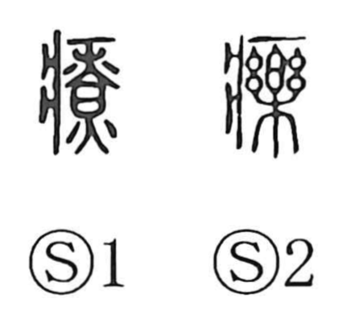

療

Kun: iyasu, naosu | On: ryo
to heal ・ to cure ・ treatment
Explanation
Shirakawa traces 療 to a ritual origin. The element 樂 was once the shape of a handled handbell, and in the old character 藥 it evoked a shamanic miko ringing that bell to drive away the demon of illness—hence the senses “heal” and “cure.” As the explicit exorcistic image receded, the graph was regularized as a phonetic–semantic form: the sickness radical 疒 marks the field of illness, and 寮 functions as the phonetic, pointing to the on reading ryo. In this way the character came to signify treatment and healing.